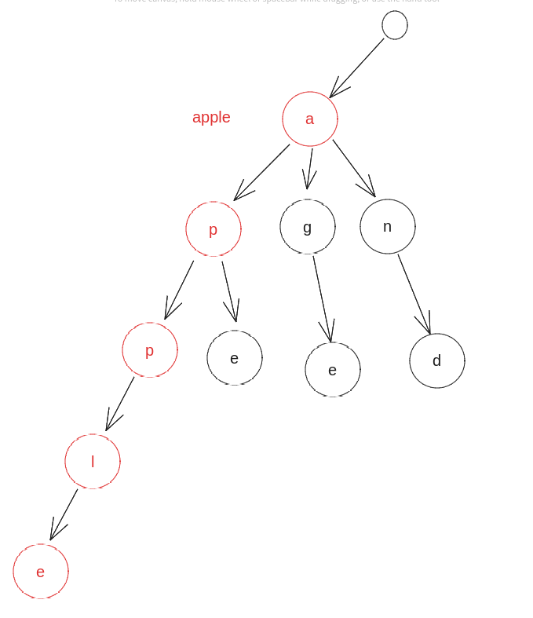
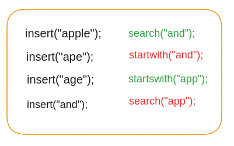

TRIES
A trie is a Tree like data structure which is efficient to search words. Not to search words but really efficient with starts with functionality.
I Had attached the Excalidraw file in this repo (see in Dropbox)

Trie¶
The Above Trie has the following words
| index | word |
|---|---|
| 1 | Apple |
| 2 | Ape |
| 3 | Age |
| 4 | And |
Search and starts with¶

Apple is found in the tire so we can say it exists 1. But app is not found may 2. App [ l e ] is starts with app that do not count towards app 3. but starts with app might be true so
So, Yeah now lets jump right into the code
class TreeNode:
def __init__(self):
self.children = {}
self.isLast = False
class Solution:
def __init__(self):
self.root = TreeNode() # root is always be empty
def insert(self, word: str):
curr = self.root
for c in word:
if c not in curr.children:
curr.children[c] = TreeNode(c)
curr = curr.children[c]
curr.isLast = True
def search(self, word: str) -> bool:
curr = self.root
for c in word:
if c not in curr.children:
return False
curr = curr.children[c]
return curr.isLast
def start(self, word: str) -> bool:
curr = self.root
for c in word:
if c not in curr.children:
return False
curr = curr.children[c]
return False if curr.isLast else True